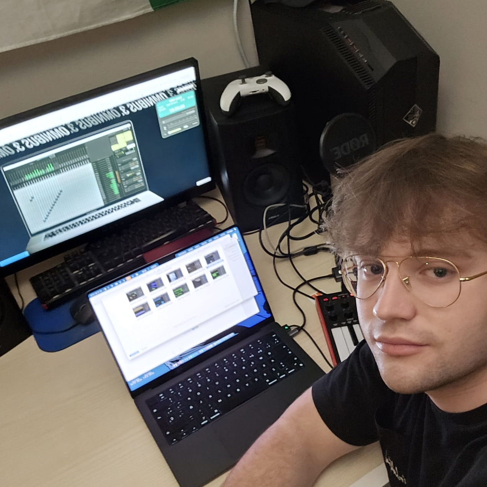

The music for The Hound of Ulster was composed by Attilio Tonola, a graduate student of the
Master’s Degree in Score Composition and Music for Audiovisual Media
at the
Escola Superior de Música de Catalunya (ESMUC).
The soundtrack was developed with historically inspired instrumentation while also embracing a cinematic and
epic tone, fitting for our retelling of the Ulster Cycle.
Contact information:
Full name: Attilio Tonola Tacias
Producer, musical composer and sound designer.
Email: 14atonola@gmail.com
Portfolio: My Canva Site